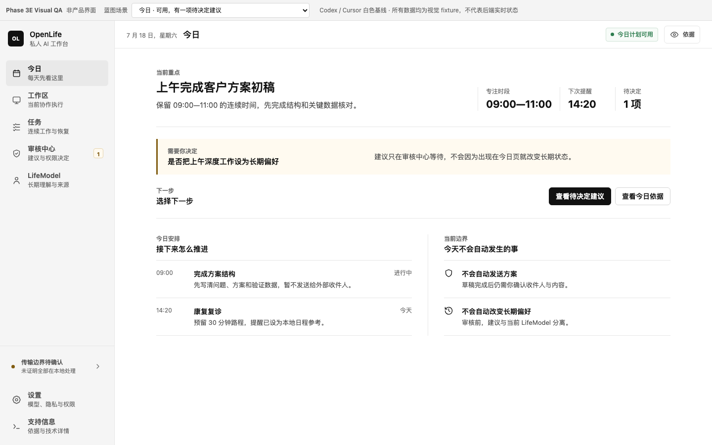
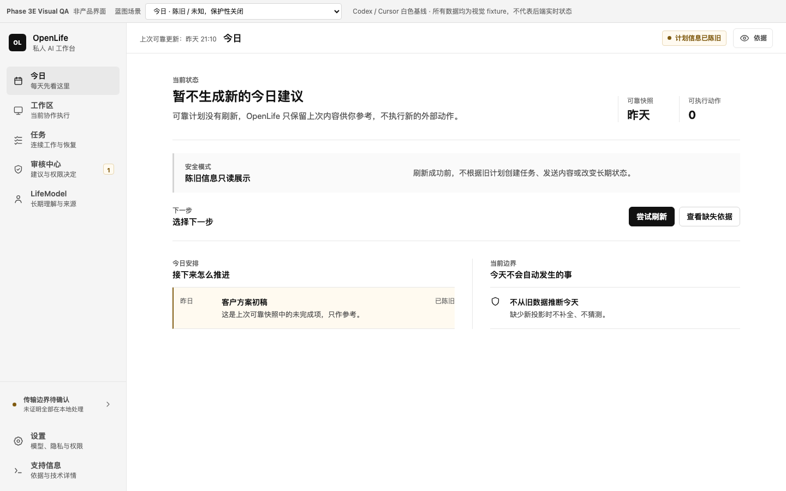
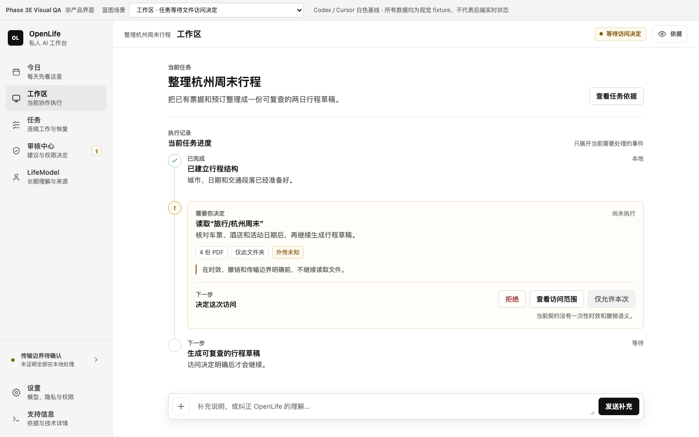
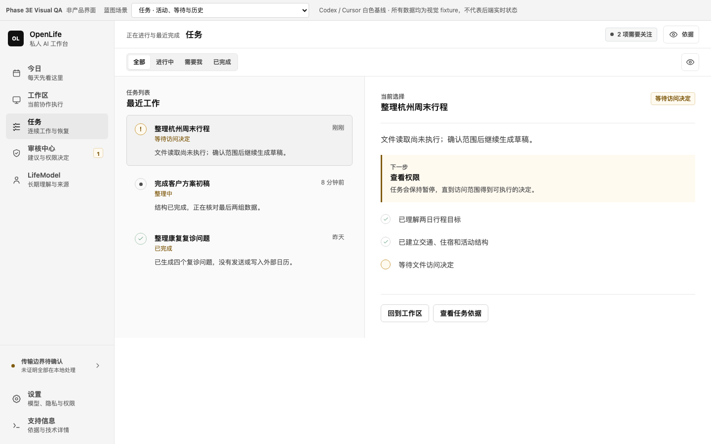
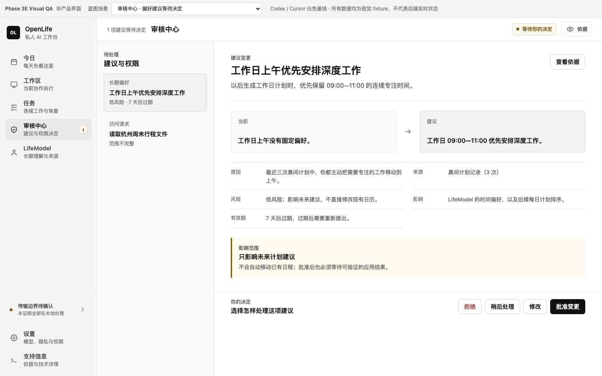
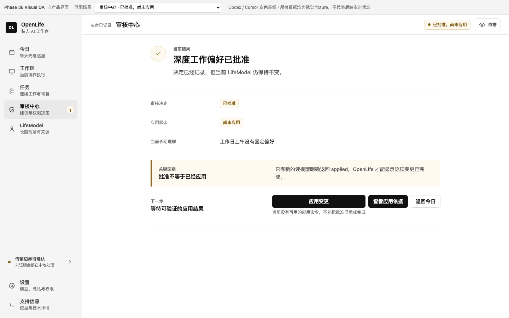
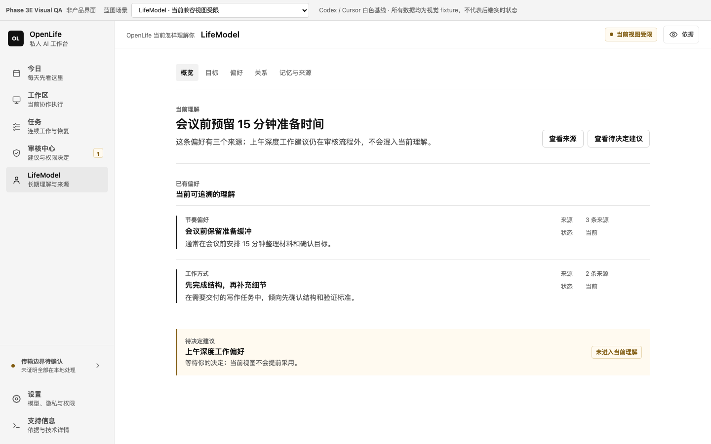
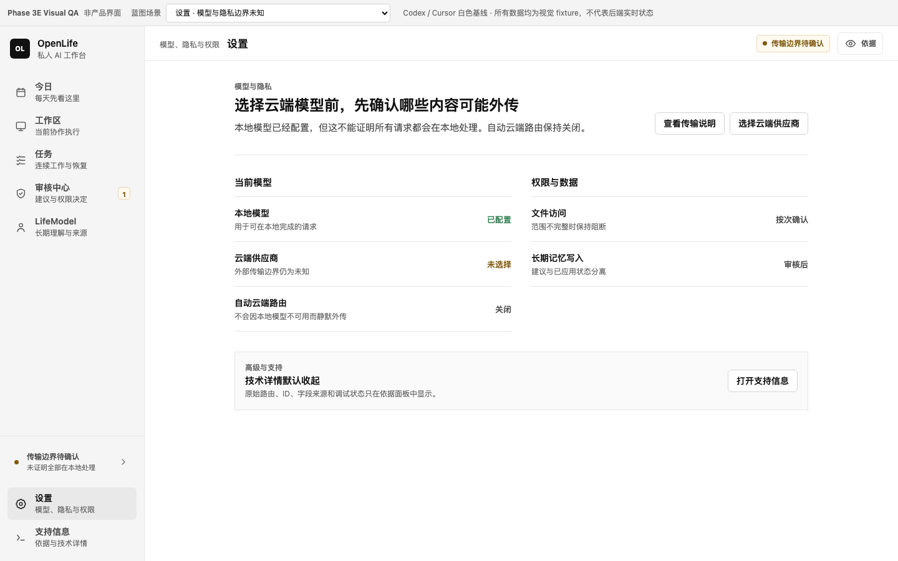

内容优先
白色对话面、黑色主动作、浅灰辅助面；信息通过留白与字重分层，不靠品牌色组织。
直接采用 Codex 与 Cursor 已验证的白色工作台语言：白色主面、浅灰侧栏、黑灰文字、1px 分隔线和黑色主动作。 OpenLife 只保留自己的信息架构、安全语义和中文内容，不再创造独立品牌配色。
用户已否决自定义松绿方案。本版不再探索品牌色，直接收敛到成熟白色工作台。
白色对话面、黑色主动作、浅灰辅助面；信息通过留白与字重分层，不靠品牌色组织。
浅灰侧栏、白色工作区、中性选中行和细分隔；圆角与阴影仅用于输入器、弹层等浮动控件。
复制两者共同视觉基线，保留 OpenLife 的 Today、Workspace、Review、LifeModel 与 fail-closed 状态契约。
固定字号、固定间距和真实 CSS variables 已在蓝图中执行。
#FFFFFF
#F5F5F5
#FFFFFF
#111111
#E6E6E6
#FFFAF0
#FFF7F6
#F7F7F7
4812162432常驻壳只保留导航和最重要上下文，证据按需出现，调试内容不占一级入口。
点击图片可查看原尺寸。所有数值与内容均为视觉 fixture。

今日 · 可用 + 待审核一个关注点，一个等待决定，一个下一步
今日 · 陈旧 / 未知保留只读快照，不根据旧数据生成动作
工作区 · 等待权限任务时间线、权限中断和补充说明形成一条主线
任务 · 队列与连续性列表负责选择，详情负责继续执行
审核中心 · 待决策先看当前到建议的差异，再执行拒绝、稍后、修改或批准
审核中心 · 已批准，尚未应用应用按钮在缺少刷新读模型证明时禁用
LifeModel · 有限兼容以阅读与来源为主，不伪造完整个人模型
设置 · 模型与隐私未知未知不显示本地绿色确定态紧凑 app bar、四项底部导航、抽屉补充入口、证据 bottom sheet、决定动作固定在拇指区。
Debug 是数据分类，不是产品文案；Safe Mode 是保护机制，使用中性或琥珀语义。
default
hover
focus
disabled + reason
loading
明确工具、目标、数据范围、传输边界、有效期和撤销方式。
evidence:permission:travel-folder
routeType · raw id · sourceRef位置、字号、背景降级；不使用整块 opacity
查看不改变状态；批准不等于应用；完成只能来自刷新后的读模型。
本方案尚未进入 React。你的结论会决定下一阶段是否继续。
{kind=link}
{kind=link}
{kind=link}
{kind=link}
{kind=link}
{kind=link}
{kind=link}
{kind=link}
{kind=link}
{kind=link}
{kind=link}
{kind=link}
{kind=link}